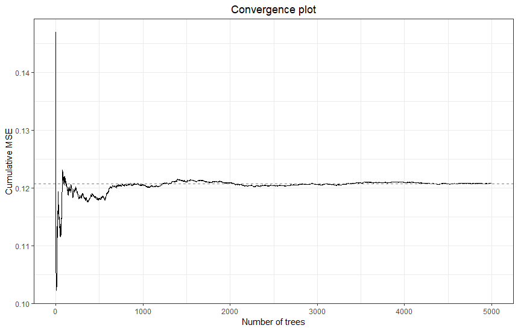
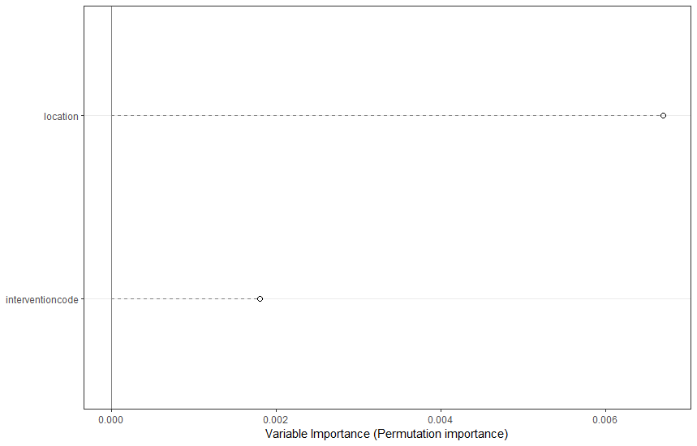
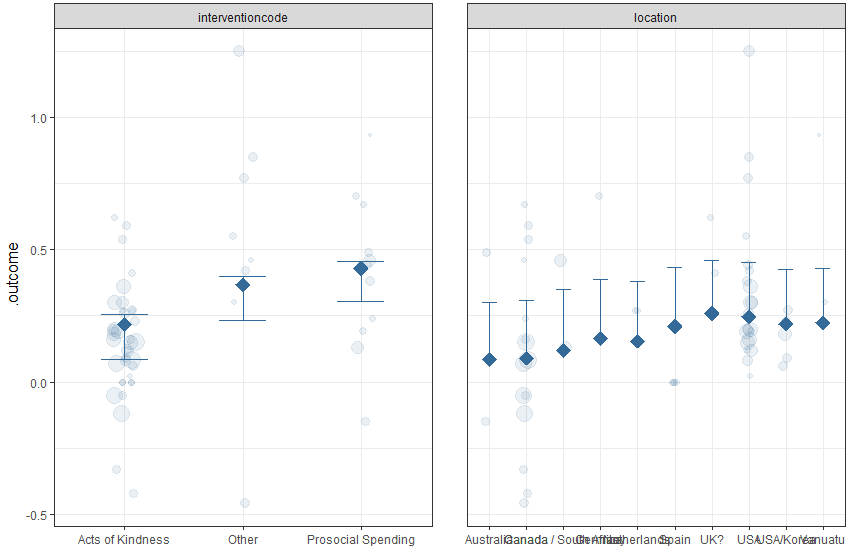
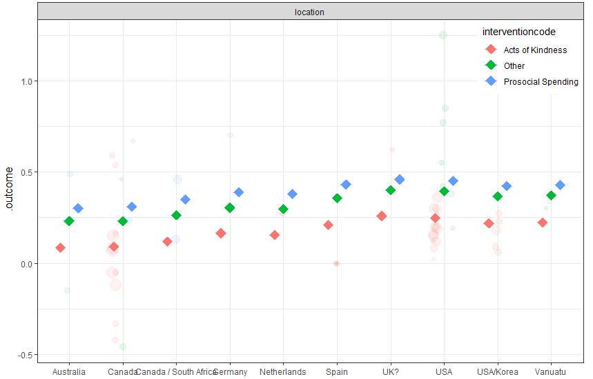

12.3 Model tuning
Next, we tune the model using the R-package caret, which offers a uniform workflow for any machine learning task. The function ModelInfo_mf tells caret how to tune a MetaForest analysis. As tuning parameters, we consider all three types of weights (uniform, fixed-, and random-effects), number of candidate variables at each split from 2-6, and a minimum node size from 2-6. We select the model with smallest prediction error (RMSE) as final model, based on 10-fold clustered cross-validation. Clustered cross-validation means that effect sizes from the same study are always included in the same fold, to account for the dependency in the data. Note that the number of folds cannot exceed the number of clusters in the data. Moreover, if the number of clusters is very small, one might have to resort to specifying the same number of folds as clusters. Model tuning typically takes a long time; for this small dataset, it might take five minutes; for a very large dataset, it might take hours. However, when your dataset is larger, you will often reach model convergence at a lower number of trees, which reduces computation time.
# Install the
install.packages("caret")
# Load the caret library
library(caret)
# Set up 10-fold grouped (=clustered) CV
grouped_cv <- trainControl(method = "cv",
index = groupKFold(data$study_id, k = 10))
# Set up a tuning grid for the three tuning parameters of MetaForest
tuning_grid <- expand.grid(whichweights = c("random", "fixed", "unif"),
mtry = 1:2,
min.node.size = 1:10)
# X should contain only retained moderators, clustering variable, and vi
X <- data[, c("study_id", "vi", retain_mods)]
set.seed(78)
# Train the model
mf_cv <- train(y = data$d,
x = X,
study = "study_id", # Name of the clustering variable
method = ModelInfo_mf(),
trControl = grouped_cv,
tuneGrid = tuning_grid,
num.trees = 5000)
# Extract R^2_{cv} for the optimal tuning parameters
r2_cv <- mf_cv$results$Rsquared[which.min(mf_cv$results$RMSE)]Based on the root mean squared error, the best combination of tuning parameters were fixed-effect weights, with 1 candidate variable per split, and a minimum of 9 cases per terminal node. The object returned by train already contains the final model, estimated with the best combination of tuning parameters. Consequently, we can proceed directly to reporting the results. First, we examine convergence again. Then, we examine the \(R^2_{oob}\).
# For convenience, extract final model
final <- mf_cv$finalModel
# Extract R^2_{oob} from the final model
r2_oob <- final$forest$r.squared
# Plot convergence
plot(final)
The final model has clearly converged. We can check the two estimates of variance explained in new data: \(R^2_{cv}\), which is based on the 10-fold grouped cross-validation, and \(R^2_{oob}\), which is based on cases outside of the bootstrap samples of the individual trees.
r2_cv## [1] 0.4985625r2_oob## [1] -0.1625724We can see that the \(R^2_{cv} = .50\), and the \(R^2_{oob} = -.16\). The negative value means that the model performs worse than just using the mean. The fact that these values differ so much suggests that perhaps our model is not detecting reliable patterns in the data. This would also correspond with the fact that none of the variables were consistently selected during the recursive preselection step. In the published paper for this meta-analysis, we bootstrapped the entire analysis 100 times, and showed that the average bootstrapped \(R^2\) was around 0. So we concluded that none of the moderators were relevant.
For the sake of this exercise, we still continue exploring, however!
12.3.1 Variable importance
variable importance metrics, which quantify the relative importance of each moderator in predicting the effect size. These metrics are analogous in function to the (absolute) standardized regression coefficients (beta; \(\mid\beta\mid\)) in regression: They reflect the strength of each moderator’s relationship with the outcome on a common metric. However, whereas betas in regression only reflect linear, univariate, partial relationships, MetaForest’s variable importance metrics reflect each moderator’s contribution to the predictive power of the final model across all linear-, non-linear-, and interaction effects. So-called permutation importance is obtained by randomly permuting, or shuffling, the values of a moderator, thereby anulling any relationship that moderator had with the outcome, and then observing how much the predictive performance of the final model drops. If predictive performance drops a lot, the moderator must have been important.
Plot the variable importance:
# Plot variable importance
VarImpPlot(final)
12.3.2 Partial dependence
Partial dependence plots visualize the shape of the marginal relationship of each moderator to the effect size, averaging over all values of the other predictors. Researchers most commonly inspect only univariate marginal dependence plots. Exploring all possible higher order interactions swiftly becomes unmanageable; with just 10 moderators, the number of bivariate interactions is 45, and the number of trivariate interactions is 120. In order to plot bivariate interactions with a specific moderator of theoretical relevance, you can use the PartialDependence function in conjunction with the moderator argument.
Because this is an exploratory, non-parametric analysis, we cannot conclude whether any of these findings are “significant”. However, the PartialDependence function has two settings that help visualize the “importance” of a finding: rawdata, which plots the weighted raw data (studies with larger weights are plotted with a larger point size), thereby visualizing the variance around the mean prediction, and pi, which plots a (e.g., 95%) percentile interval of the predictions of individual trees in the model. This is not the same as a confidence interval, but it does show how variable or stable the model predictions are.
PartialDependence(final, rawdata = TRUE, pi = .95)
The partial dependence plots show that acts of kindness had a somewhat smaller effect than other interventions, and that studies conducted in the USA had slightly higher effects than others. But there are some factor levels with very few cases, and there is a lot of overlap between the distributions across levels. Thus, it is not surprising that we found no significant effect of location in the meta-regression model of earlier exercises.
Finally, if you want to explore bivariate interactions, you can specify one moderator variable. With this dataset, this plot does not make much sense, because there is so much missing data in combinations of factors. But the syntax for a moderated partial dependence plot is:
PartialDependence(final, moderator = "interventioncode",
rawdata = TRUE, pi = .95)